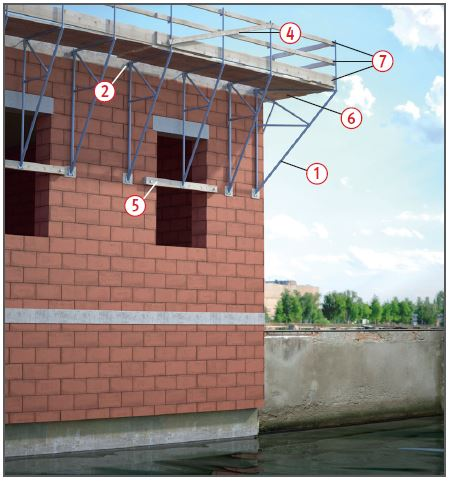
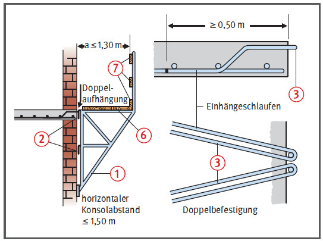

Gefährdungen
- Fehlende Sicherungsmaßnahmen
beim Auf-, Um- und Abbau
sowie mangelhaft ausgebildeter
Seitenschutz oder Gerüstbelag
bei der Verwendung können zu
Absturzunfällen führen.
- Falsch
dimensionierte Überbrückungen
der Wandöffnungen, unzureichende
Konsolverankerungen
oder deren vorzeitige Belastung
können zu Gerüstabstürzen
führen.
Allgemeines
- Konsolgerüste sind Gerüste "älterer Bauart".
Der Baustein dient lediglich als Orientierungshilfe, sollte ein Konsolgerüst im
Ausnahmefall verwendet werden. Für Konsolgerüste ist ein
Brauchbarkeitsnachweis, bestehend
aus dem Standsicherheitsnachweis
und dem Nachweis der
Arbeits- und Betriebssicherheit,
erforderlich. Er ist auf der Grundlage
von DIN EN 12811-1 zu erbringen.
- Für Konsolen muss in jedem
Fall ein Nachweis der Brauchbarkeit
vorliegen. Der Brauchbarkeitsnachweis
kann durch eine
statische Berechnung, durch
Typenprüfung oder durch Bauartzulassung
erbracht werden
 .
.
- Aufbau- und Verwendungsanleitung
des Herstellers beachten. Gegebenenfalls muss für den
sicheren Auf- Um- und Abbau
ergänzend eine Montageanweisung
erstellt werden. In diese
müssen die Mitarbeiter unterwiesen
werden.
- Gerüstbauarbeiten nur unter
Aufsicht einer fachkundigen Person
und von fachlich geeigneten
Beschäftigten ausführen lassen.
Schutzmaßnahmen
- Beim Auf-, Um- und Abbau
sind Maßnahmen gegen Absturz von Personen vorzunehmen.
- Geländer- und Zwischenholm
sind gegen unbeabsichtigtes
Lösen, das Bordbrett ist gegen
Kippen zu sichern.
- Ohne statischen Nachweis
dürfen als Geländer- und
Zwischenholm bei einem Pfostenabstand bis 1,50 m Gerüstbretter
mit Mindestquerschnitt 15 x 3 cm
verwendet werden. Die Aufbau- und
Verwendungsanleitung des
Herstellers ist zu beachten.
- Bordbretter müssen den Belag um mindestens 15 cm überragen. Mindestdicke 3 cm.
- Auskragung der Konsolgerüste max. 1,30 m.
- Konsolgerüste dürfen als
Arbeitsgerüste für eine Belastung
von höchstens 2,0 kN/m2
verwendet werden.
- Konsolabstand max. 1,50 m. Im Bereich von Gebäudeecken Eckkonsolen verwenden.
- Für die Aufhängung der Konsolen ist zwingend die Aufbau- und
Verwendungs anleitung des
Konsolherstellers zu beachten
 .
.
- Werden Einhängehaken verwendet,
so müssen diese mindestens
25 cm lang oder gegen
unbeabsichtigtes Aushängen
gesichert sein. Je Konsole
müssen 2 Einhängeschlaufen
verwendet werden
 .
.
- Konsolen gegen seitliches
Ausweichen und Kippen gemäß
Aufbau- und Verwendungsanleitung sichern
 .
.
| 1 Überbrückung von Wandöffnungen |
| Überbrückungsträger |
zu überbrückende Öffnung |
| ≤ 1,0 m |
≤ 2,25 m |
| Holz* |
10 cm x 10 cm
(1 Holzbalken) |
10 cm x 12 cm
(2 Holzbalken) |
| Stahl |
|
I 100
IPE 100 |
*Sortierklasse S 10 oder MS 10 nach DIN 4074 Teil 1
| 2 Gerüstbretter oder -bohlen aus Holz als Belagteile von Fanggerüsten (S10 nach DIN 4074-1) |
| Bohlenbreite in |
Absturzhöhe in |
Maximale Stützweite in m für doppelt gelegte Bretter oder Bohlen mit einer Dicke von |
Maximale Stützweite in m für einfach gelegte Bretter oder Bohlen mit einer Dicke von |
| cm |
m |
3,5 cm |
4,0 cm |
4,5 cm |
5,0 cm |
3,5 cm |
4,0 cm |
4,5 cm |
5,0 cm |
| 20 |
1,0 |
1,5 |
1,8 |
2,1 |
2,5 |
— |
1,1 |
1,2 |
1,4 |
| 1,5 |
1,3 |
1,6 |
1,9 |
2,2 |
— |
1,0 |
1,1 |
1,3 |
| 2,0 |
1,2 |
1,5 |
1,7 |
2,0 |
— |
— |
1,0 |
1,2 |
| 24 |
1,0 |
1,7 |
2,1 |
2,5 |
2,7 |
1,0 |
1,2 |
1,4 |
1,6 |
| 1,5 |
1,5 |
1,8 |
2,2 |
2,5 |
— |
1,1 |
1,2 |
1,4 |
| 2,0 |
1,4 |
1,6 |
2,0 |
2,2 |
— |
1,0 |
1,2 |
1,3 |
| 28 |
1,0 |
1,9 |
2,4 |
2,7 |
2,7 |
1,1 |
1,3 |
1,5 |
1,7 |
| 1,5 |
1,7 |
2,0 |
2,5 |
2,7 |
1,0 |
1,2 |
1,4 |
1,6 |
| 2,0 |
1,5 |
1,8 |
2,2 |
2,5 |
1,0 |
1,1 |
1,3 |
1,4 |
Für die Ausführung sollten nur die Bohlenquerschnitte verwendet werden, die blau unterlegt sind.

- Konsolfüße im Bereich von Wandöffnungen auf Holzbalken oder Stahlträger abstützen
 (Tabelle 1).
(Tabelle 1).
- Belagebene vollflächig auslegen
 .
.
- Der Belag darf nicht ausweichen oder wippen. Überdeckungen im Bereich der Konsolen einhalten (≥ 20 cm).
- Nicht auf Gerüstbeläge abspringen.
- Das Absetzen von Lasten mit Hebezeugen ist unzulässig.
- Mindestabmessungen des Gerüstbelages
- bei Arbeitsgerüsten 20 x 3,5 cm; bei Konsolabständen ≤ 1,25 m auch 20 x 3 cm,
- bei Fang- und Dachfanggerüsten gemäß Tabelle 2.
- Seitenschutz aus Geländerholm, Zwischenholm und Bordbrett anbringen
 .
.
- Seitenschutz auch an den Stirnseiten von Konsolgerüsten anbringen.
- Gerüstbohlen und -bretter
müssen mindestens der Sortierklasse
S 10 nach DIN 4074-1 und
der Festigkeitsklasse C24 nach
DIN EN 338 entsprechen.
Prüfungen
- Gerüstersteller: Prüfung durch eine "zur Prüfung befähigte Person"
nach Fertigstellung und vor Übergabe an den Nutzer, um den ordnungsgemäßen Zustand festzustellen (Nachweis-Prüfprotokoll).
- Gerüstnutzer: Inaugenscheinnahme durch eine "qualifizierte Person" des jeweiligen Nutzers vor der Verwendung, um die sichere Funktion und die Mängelfreiheit festzustellen (Nachweis-Checkliste).
07/2021